LOC_START — referencia aceptada
CAR-ART-002/003 CLOSED / PASS. Evidencia anterior intacta.
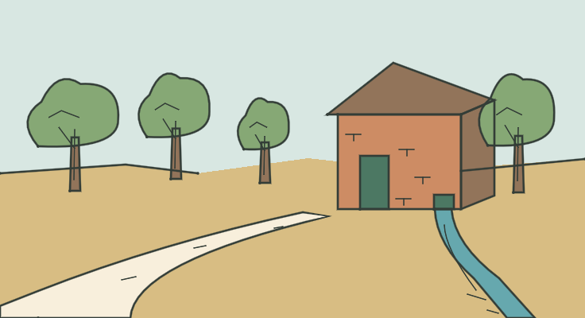
Registro de aceptación1 referencia aceptada · 9 piezas nuevas pendientes de aceptación humana · 1 excepción bloqueada. Sin cambios de geografía, reglas, layout ni renderer.
GIF: muestreo de frames reales con pausa final; paleta/tiempos aproximados. PNG y métricas son la evidencia exacta. La cámara no codifica los puntos cardinales.
CAR-ART-002/003 CLOSED / PASS. Evidencia anterior intacta.

Registro de aceptaciónRevisión humana pendiente · técnica PASS
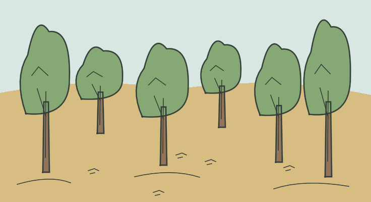
Seis árboles de escala y profundidad distintas, hojarasca y suelo continuo.
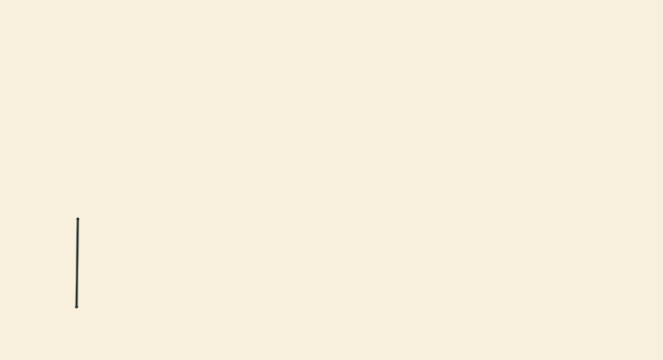
Dibujo compartido por LOC_FOREST1…LOC_FOREST22; no es un nuevo ID de sala. No hay senda, flechas o hitos que resuelvan el bosque.
Revisión humana pendiente · técnica PASS
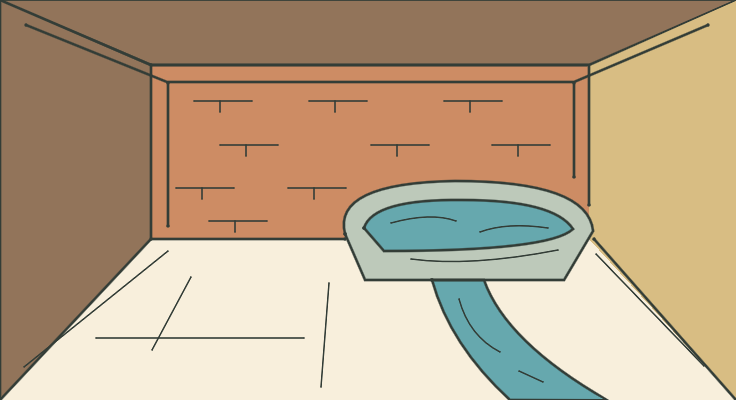
Planos de ladrillo, suelo seco, gran manantial con pila y canal de salida.
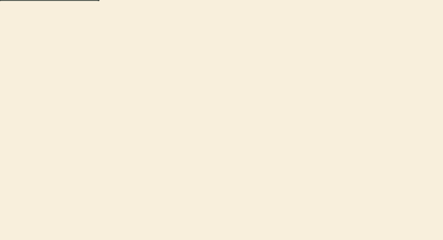
Pila y sección del canal son interpretación geométrica. KEYS, LAMP, FOOD y BOTTLE no se fijan en el fondo; el terminal describe los objetos presentes.
Revisión humana pendiente · técnica PASS
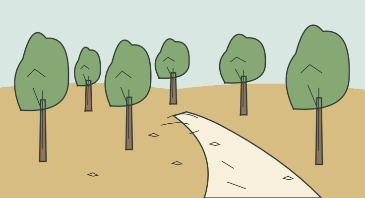
Carretera que termina entre árboles y raíces, sin abertura oscura.
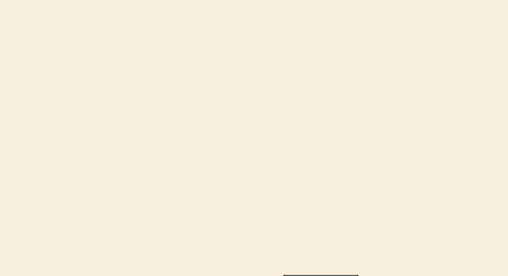
La carretera llega del este según la fuente; la cámara no codifica direcciones del parser.
Revisión humana pendiente · técnica PASS
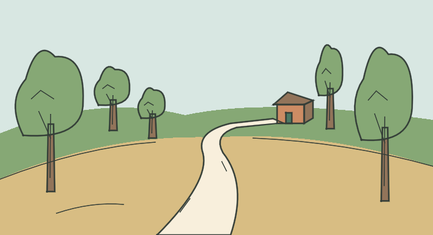
Lomo del terreno, camino que baja al otro lado, bosque y casita lejana.
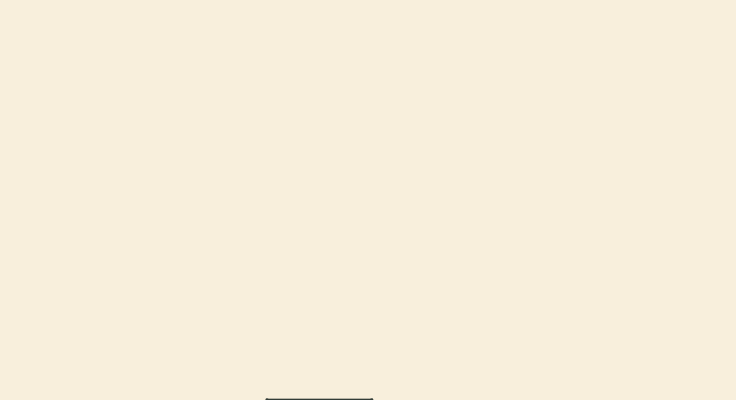
La casa conserva ladrillo/tejado de START a menor escala. No se añade humo, puente ni una conexión nueva.
Revisión humana pendiente · técnica PASS
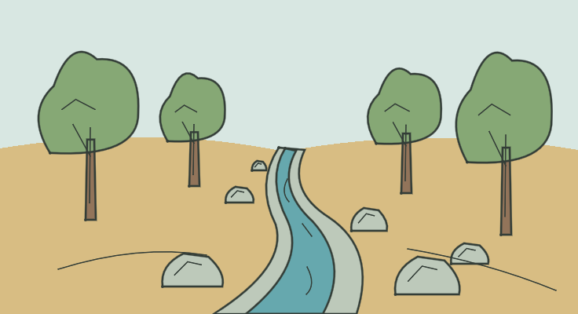
Arroyo curvo, lecho y orillas con rocas de escala variable, bosque.
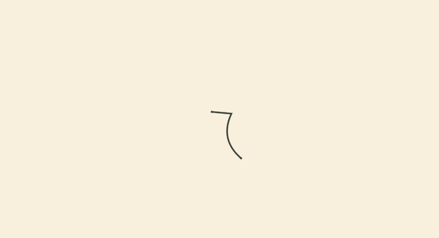
Rocas junto al cauce; sin pasos, puentes o rutas nuevas. Agua y carretera tienen colores distintos.
Revisión humana pendiente · técnica PASS
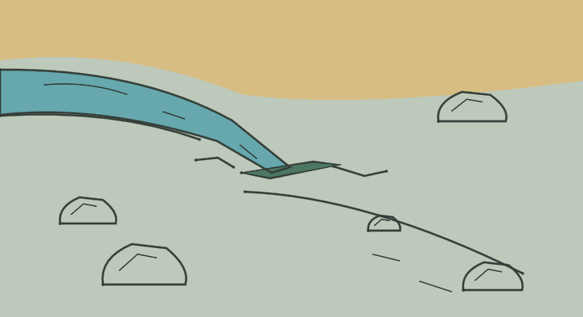
Agua que converge en una grieta estrecha, roca desnuda aguas abajo y piedras para escala.
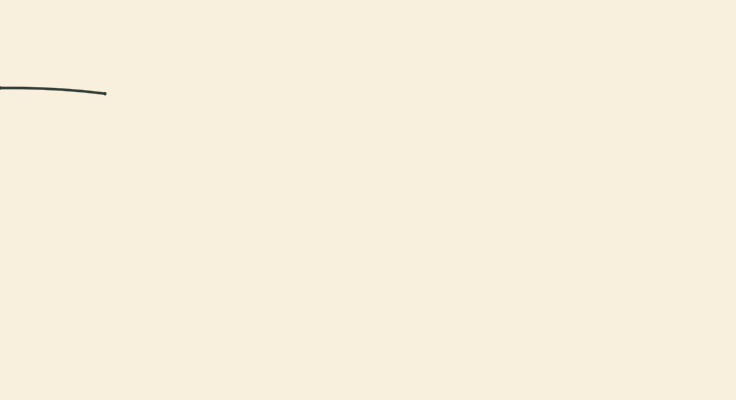
La abertura no es una puerta ni una cueva transitable; su ancho se expresa por un hueco delgado, sin inventar una escala métrica absoluta de cámara.
Revisión humana pendiente · técnica PASS
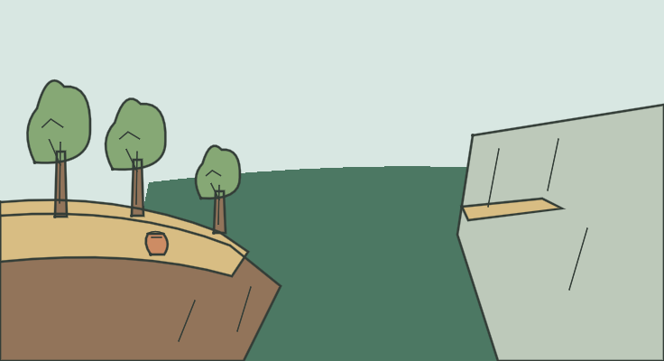
Borde rocoso abrupto, bosque que se aclara, abismo, pequeña cornisa al otro lado y urna empotrada.
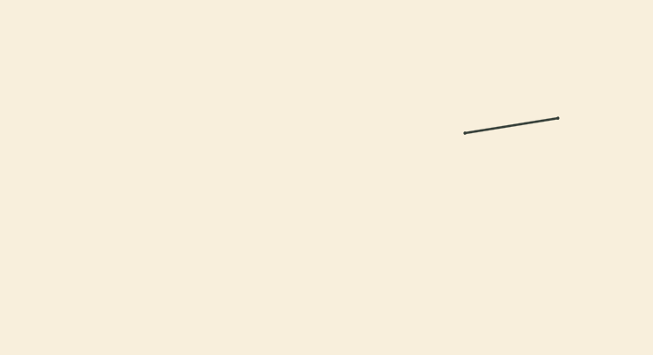
No hay descenso dibujado. Se muestra solo la silueta fija de URN, sin afirmar contenido o llama. La cornisa está al oeste según la fuente, no según el eje de pantalla.
Revisión humana pendiente · técnica PASS
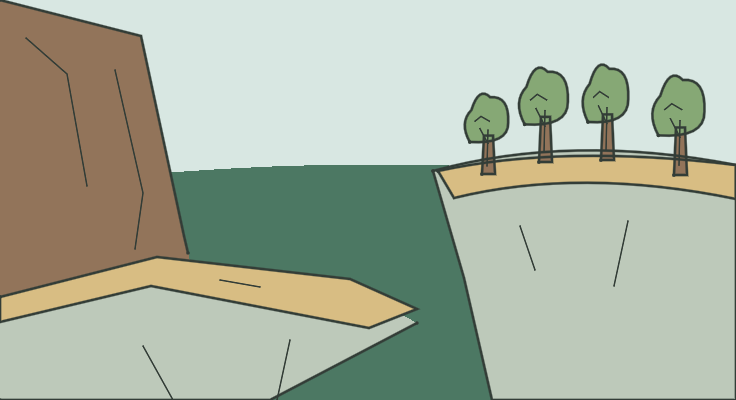
Repisa en primer plano y pared vertical; enfrente, un claro rodeado de bosque.
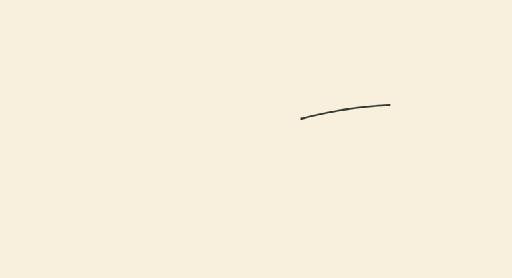
No se añade senda de salida. SAPPH es transportable y queda en la descripción real del terminal, no pintado permanentemente. La fuente no ofrece una entrada jugable nueva en este corte.
Revisión humana pendiente · técnica PASS
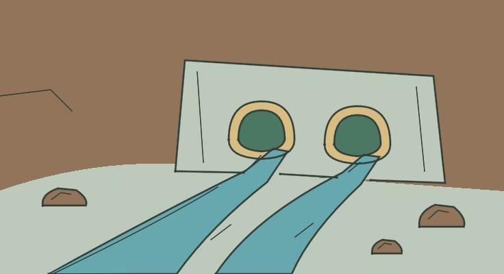
Par de bocas pequeñas en un muro amplio, cauces de agua y roca.
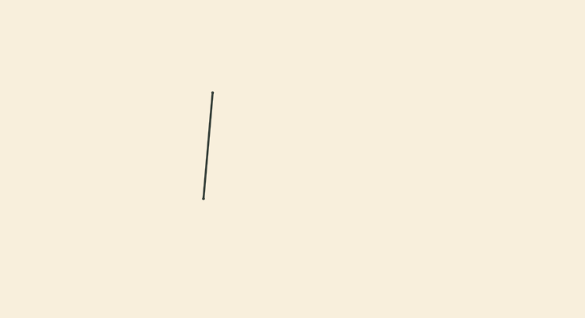
No se dibuja un túnel humano ni una salida nueva. DEEP y ausencia de LIT se conservan en datos: no se añade lámpara, fuego o lógica de iluminación.
BLOCKED / NOT PRODUCED por decisión humana.
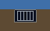
Referencia heredada estática; selección abierta/cerrada pendiente de soporte técnico autorizado.
Ficha del bloqueo